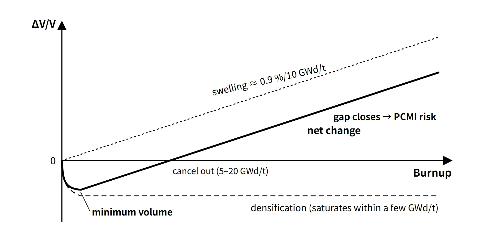

Fuel & Materials · C-FM-006
Fuel Densification and Swelling — Pellets That Shrink Early and Swell with Burnup
Why fuel pellets first shrink as fine pores disappear and then swell almost linearly with burnup, and what each stage means for the pellet-cladding gap.
Densification is the early-irradiation shrinkage of UO₂ pellets as fine pores disappear and density rises; swelling is the burnup-proportional growth of pellet volume as solid and gaseous fission products (FPs) accumulate in the lattice and in bubbles.
The two act in opposite directions, so pellet volume falls over the first few GWd/tU and then grows again almost in proportion to burnup.
Principle and mechanism
Densification — irradiation resinters the pellet
- Sintered pellets are made at about 95 % of theoretical density (TD); the remaining 5 % or so is porosity.
- During irradiation, fission-fragment tracks (fission spikes) pass by fine pores (around 1 μm) and dissolve the vacancies around them back into the lattice, so the pores disappear. This is also called in-reactor resintering; in hot regions thermal sintering adds to it.
- Large pores (several μm or more) do not disappear easily, so controlling the pore-size distribution in manufacturing suppresses densification.
- NRC RG 1.126 Rev. 2 takes the maximum in-reactor density increase to be equal to the density increase in an out-of-reactor resintering test (1,700 °C, 24 hours), Δρsntr. The maximum is generally reached below 10,000 MWd/t; in the model kinetics for Δρsntr < 4 %TD, the change is zero up to 20 MWd/t, rises in proportion to log(BU) from 20 to 2,000 MWd/t, and is saturated beyond 2,000 MWd/t.
- Dimensions are converted with ΔD/D = Δρ/3ρ for diameter (isotropic) and ΔL/L = Δρ/2ρ for length (conservative anisotropic).
Swelling — one U atom becomes two FP atoms
- Solid FP swelling: Zr, Mo, rare earths, Cs and others dissolve in the lattice or precipitate, increasing the volume. It is independent of temperature and nearly proportional to burnup.
- Gaseous FP swelling: Xe and Kr grow and coalesce into intragranular and grain-boundary bubbles. It matters at high temperature, above about 1,200 °C, and can jump during power-increase transients.
- Post-irradiation examination of South Korean PWR fuel (17 rods, 49 samples) measured a swelling rate of 0.091 %/(GWd/tU), almost the same as the theoretical value of 0.088 %/(GWd/tU) for solid FPs alone. This means pellet swelling in normally operating PWRs is mainly the solid-FP share; it is often remembered as "about 0.7–1 %ΔV per 10 GWd/tU".
- The same examination reported that the burnup at which cumulative densification and cumulative swelling cancel (the pellet regains its initial volume) was 5–20 GWd/tU, depending on the powder manufacturing characteristics.
Net volume change — the sum of two curves
Assuming an initial density of 95 %TD and Δρsntr = 1 %TD, and adding the swelling rate of 0.091 %/(GWd/tU) as a constant slope extrapolated onto the RG 1.126 kinetics, gives the following (example calculation; gaseous swelling and rim porosity not included).
| Burnup (GWd/tU) | 0 | 2 | 11.4 | 20 | 40 | 60 |
|---|---|---|---|---|---|---|
| Net ΔV/V (%) | 0 | −0.86 | 0 | +0.78 | +2.60 | +4.42 |
The maximum volume decrease from densification is −Δρ/(ρ₀+Δρ) = −1/96 ≈ −1.04 %, or about −0.35 % in diameter. For an 8.19 mm pellet that is about 0.03 mm, enough to widen the initial diametral gap (about 0.17 mm, standard 17×17 example) by about 17 % in cold geometry. The volume minimum is not, however, the point of maximum hot gap: the actual gap is set together by thermal expansion, crack relocation and cladding creep-down.
![Graph of pellet volume change from −2 to +7 % against burnup from 0 to 70 GWd/tU: the densification part drops to about −1.04 % and stays flat, the swelling part rises at 0.91 % per 10 GWd/tU, and the net curve reaches a minimum of about −0.9 % near 2 GWd/tU and crosses zero near 11 GWd/tU; an inset shows the RG 1.126 log kinetics from 10 to 10,000 MWd/t, coloured chips list what widens or narrows the pellet-cladding gap, and a card gives the RG 1.126 model with resintering at 1,700 °C for 24 h and densification ΔV/V of about −1.04 %](../../assets/images/concepts/c-fm-006-densification-swelling/fig1-net-volume-vs-burnup.webp)
What it means in a plant
Densification — thermal and mechanical issues early in life
RG 1.126 sums up the effects of densification in three points:
- The smaller diameter widens the gap, so the gap conductance hgap drops and fuel temperature and stored energy rise. This is why 10 CFR 50 Appendix K requires densification to be included in the pre-LOCA stored-energy calculation.
- The shorter pellets raise the linear power at the same power.
- If axial gaps form in the fuel column, local power spikes appear at those locations and the cladding can collapse into the gaps.
Point 3 actually happened. During the 1972 refueling inspection at R.E. Ginna, short flattened sections of fuel rods were found; the cause was creep collapse of the cladding under coolant pressure into axial gaps created by densification. All the collapsed rods were unpressurized rods, and neutron flux measurements at Point Beach 1 and Robinson confirmed local peaks at the gap locations. In November of the same year the AEC issued a technical report on densification and required it to be reflected in licensing analyses. Since then, helium prepressurization, stable pellets (large grains, controlled pore distribution), plenum springs and resintering-test quality control have become standard.
Swelling — closing the gap and pushing the cladding
- The gap narrows through pellet crack relocation, thermal expansion and swelling (on the pellet side) and cladding creep-down (coolant pressure of 15.5 MPa exceeds the internal pressure), so depending on the design the hot gap closes at roughly several tens of GWd/tU.
- After closure, swelling and thermal expansion push directly on the cladding, causing pellet–cladding mechanical interaction (PCMI), which during power-increase transients can lead to iodine stress corrosion cracking (PCI-SCC).
- After closure, contact conduction raises hgap again and fuel temperature falls — one reason why the fuel temperature coefficient changes with burnup.
High burnup — the rim structure (HBS)
At the pellet periphery, Pu-239 builds up from U-238 resonance capture, so the local burnup is higher than the average. Above a local burnup of about 60–80 GWd/t and below about 1,000–1,200 °C, the grains subdivide to about 0.1–0.3 μm and μm-sized pores increase (the high-burnup structure, HBS). It appears in an outer layer 100–200 μm thick once the pellet average exceeds about 40–45 GWd/t. The rim traps gas in its pores, increasing local swelling and lowering thermal conductivity, and it is a source of fine fragmentation and rapid gas release in an RIA or LOCA.
![Cross-section of a high-burnup UO2 pellet inside its cladding with three numbered zones: a hot centre with gas bubbles and fission gas release, a mid-radius zone dominated by solid fission-product swelling, and an outer rim (high-burnup structure) with fine grains and pores; beside it, conceptual curves of relative temperature falling from centre to surface and of local burnup normalized to the pellet average, flat near 1 and rising steeply above 2 at the surface, with the local rim threshold of 60 to 80 GWd/t shown as a band](../../assets/images/concepts/c-fm-006-densification-swelling/fig2-pellet-radial-zones.webp)
Since 1 %FIMA ≈ 9.4 GWd/tHM, the swelling rate of 0.091 %/(GWd/tU) is about 0.86 % per %FIMA.
Regulatory basis
| Basis | Key point |
|---|---|
| 10 CFR 50 App. A GDC 10 | Specified acceptable fuel design limits (SAFDLs) must not be exceeded in normal operation and anticipated operational occurrences |
| 10 CFR 50 App. K | Densification considered in the pre-LOCA steady-state temperature distribution and stored-energy calculation |
| NRC RG 1.126 Rev. 2 (2010) | Densification model: resintering at 1,700 °C for 24 h, kinetics, 95/95 statistics, isotropy assumption. Technical basis NUREG-0085 (1976); found to need no change in the 2015 review |
| NUREG-0800 SRP 4.2 | Densification and swelling reflected in the design-basis evaluations: cladding collapse prevention, cladding strain, internal pressure, fuel temperature |
| KINS Safety Review Guideline 4.2, FSAR Section 4.2 | The equivalent framework for fuel system design reviews in South Korea |
Compared with when the questions were set (2003–2006, the 71st, 76th and 78th exams), the densification model moved from the 1970s first edition of RG 1.126 to Rev. 2 in 2010, but its resintering-test framework is the same. A current answer should add one line on the high-burnup rim structure and the tightening of burnup-dependent RIA and LOCA criteria.
Easily confused pairs
| Densification | Solid FP swelling | Gaseous FP swelling | Cladding irradiation growth | |
|---|---|---|---|---|
| Object | Pellet | Pellet | Pellet | Cladding (Zr alloy) |
| Volume | Decreases | Increases | Increases | Nearly unchanged; axial elongation |
| Cause | Fine pores disappear | FP atoms accumulate in the lattice | Xe and Kr bubbles grow | Anisotropic crystal deformation from irradiation |
| Timing, conditions | Early (saturates within a few GWd/t) | Throughout life, independent of temperature | High temperature (above about 1,200 °C), transients | Throughout life (fast-neutron fluence) |
| Magnitude | About −0.5 to −1.5 %ΔV (pellet-dependent) | About 0.9 %ΔV per 10 GWd/tU | Depends on temperature history | Assembly length and bow issues |
| Consequence | Wider gap, power spikes, cladding collapse | Gap closure, PCMI | Higher PCMI load, linked to FGR | Interference with top and bottom nozzles, assembly bow |
The 2017 exam, session 2, Q3 and the 2023 exam, session 3, Q2 ask about the four phenomena in this table together with fission gas release and cladding oxidation and hydriding.
Key points at a glance
- Densification, definition: early in irradiation, fine pores (about 1 μm) in UO₂ pellets are removed by fission fragments → higher density, smaller diameter and length (in-reactor resintering).
- Densification, characteristics: saturates within a few GWd/tU; magnitude = Δρ of the resintering test (1,700 °C, 24 h) (RG 1.126).
- Densification, effects: wider gap → lower hgap, higher fuel temperature and stored energy; higher linear power; axial gaps → power spikes and cladding collapse (1972 Ginna, unpressurized rods).
- Densification, countermeasures: He prepressurization, control of pore distribution and grain size, plenum springs, inclusion in design analyses.
- Swelling, definition: volume increase from FP production (one U atom → two FP atoms).
- Swelling, types: solid FP (independent of temperature, about 0.9 %ΔV per 10 GWd/tU), gaseous FP (above about 1,200 °C, bubble growth and coalescence).
- Swelling, effects: gap closure → PCMI and PCI; linked to internal pressure and FGR; high-burnup rim (HBS) porosity and grain refinement.
- Net behaviour: early decrease (densification dominates) → cumulative cancellation at 5–20 GWd/tU (initial volume regained) → linear increase afterwards (swelling dominates).
- Regulation: GDC 10 (SAFDLs), App. K (stored energy), RG 1.126, SRP 4.2.

This is a model answer, not an official solution. It reflects the criteria current as of 2026.
Exam relevance
The pair has appeared six times in the Korean Professional Engineer (Nuclear Power) exam: 71st exam, session 1, Q7 (fuel swelling) and session 3, Q5 (dimensional and microstructural changes of UO₂ during burnup); 76th exam, session 1, Q1 (densification of fuel pellets); 78th exam, session 1, Q7 (fuel swelling); 2017 exam, session 2, Q3 (fuel-rod phenomena during power operation); and 2023 exam, session 3, Q2 (fuel-rod symptoms with increasing burnup) — the last two cover swelling and densification, FGR, oxidation and hydriding, and irradiation growth together. The older questions are short-answer definitions; the recent ones want the phenomena compared and their consequences for the gap. The 71st exam, session 3, Q5 asks about "dimensions and microstructure" together: answer the dimensions with the net volume curve and the microstructure with the three radial zones (central bubbles and grain growth, mid-radius, outer rim) and FGR.